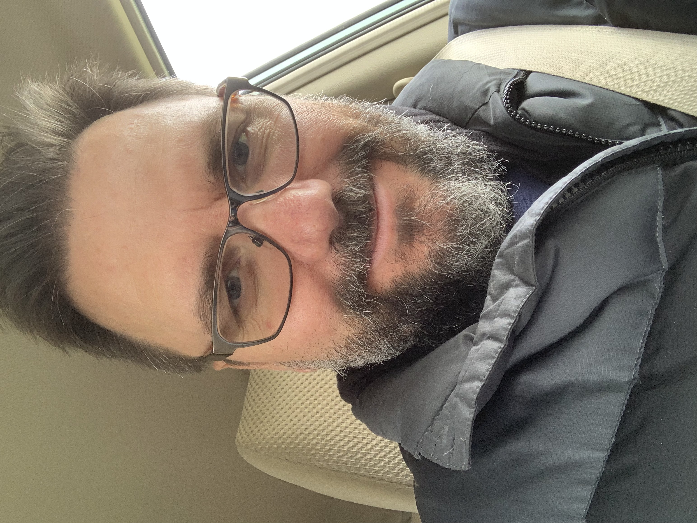

|  | Dr. Robert MitrikWriter & Storyteller
|
Based on 36 years of composition and literary scholarship, which include ten years of professional writing training in corporate settings and nineteen years of college and university instruction in both traditional and online courses:
| Storytelling/Writing | ⭐️⭐️⭐️⭐️⭐️ |
| Literary Semiotics/Rhetoric | ⭐️⭐️⭐️⭐️⭐️ |
| Web Development | ⭐️⭐️ |
Mythopoetic for High Modern Writing Style. A literary semiotic scholar writes among those of his kind in the
fantastic traditions of story. Following the sun, his days in story follow the movement of shadows that provide for the changing
scenes, in the gliding guiding light that climbs slowly out along and over the foothills of the misty mountains, whose very tops
reach into the whiteness of the Literary heavens. No longer lost at university, these are of the kind who work with words, who
seek to join in the company of the High Modern Writers at the dawn of the Fourth Age. Endowed in this host are altruistic mentors
who pursue fellowship in their turning away, who have left behind the profit-taking mayhem of the HE industry—where true
learning has been misplaced, if not lost entirely.
The literary semiotic scholar seeks to follow the paths gilded by the triadic philosophy of his work, in search of that mythic glimpse
beneath the edge of the Goddess's veil, where Imaginative Sub-creation forever proffers the knowledge and understanding that begin
in logos, that have been pursued in the dangers of rhetoric, that have forever inspired the High Style of the current Age—
always for the purpose of clelbrating the divine vibration: to reveal the mysteries in storytelling of knowledge acquisition that comes
from the cosmic outside, from where are channeled those numinous embraces of epiphany that enlighten acceptance of sacred learning that
is nested in the abductive thinking of the ancients—which is Blessed by the two eternal gifts delivered in the breath of God's Song:
Language in its joyous celebration of omniscient ambiguity and Truth in its inherent deep story strctures delivered through Myth-Making.